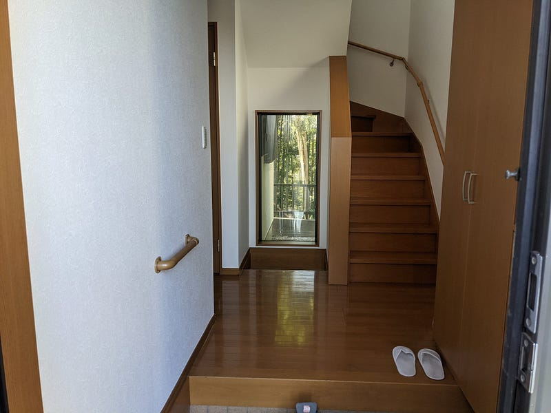

持ち家派ではなかったけど家持ちになった
持ち家派ではなかったけど家持ちになった
ずっと家は買わなくてもいいなぁ、派だったのだけど、この度とうとう家を買って、引っ越した。これはその記録です

コロナ、在宅勤務、子供3人、年齢
2020年2月から自分は在宅勤務になった。妻も毎日ではないものの、出社回数は半分かそれ以下になった。
自分はイベントを運営を含む仕事をしてるのでいつまた気にせずに外出できるようになるのか、この期間ずっと日本と世界のパンデミックの状況やワクチンの開発状況を追ってきた。
だが、2020年9月くらいの時点では、正直自分の観測としては健康被害のリスクだけでなく風評被害等のリスクを考えると世界と人の心がパンデミック前の状態に戻るにしてもまだ年単位で待たないといけないだろう、と判断した。（注：これを書いている間に某予測では日本の脱コロナは2022年4月ごろという予測も出てた）
すなわち在宅勤務もなんらかの形で続くだろう、ということも予測できた。
東京23区マンション在住、人口密度高し
それまでの住まいで在宅勤務を続ける上での問題は、とにかくにも東京23区の賃貸マンションの我が家の人口密度が常に高くなってしまった、ということに集約できる。
親二人子供3人で都心のマンションに住むこと自体は可能だ（うれしくはないけど）。
しかし在宅勤務しつつ、親も子供達もあんまり外出もできない状態で家の中にこもっている機会が格段に増えてしまった。
この恒常的に家に全員でいる、というのは本当に本当に全員の精神衛生上よくなかった。親はイライラするし、子供も親の顔をうかがってしまう。部屋数も人間の数に対して少なくて、かといって気軽に外出できるような感じでもなく、とにかくどうしようもなかったのだ。
でも多くの人が感じているように、基本通勤がないなら、別に会社住所が都心にあるからって都心に住む必要もない。
子供たちもだんだん大きくなってきて急なお迎えが必要の回数も減り、さらに勤務先と住居の距離が多少離れても大丈夫になってきた。
ここまで考えて家を買っての引っ越しはありだな… と考え始めていた
そんなおり、さらにもう一つ重要な点に気づいてしまった。自分の年齢だ。
ローンを組む… 俺が？
将来いつか住宅ローンを組む事もあるかなぁとこの何年も漠然と思っていたが、ここまでどうしても持ち家に住みたいという欲求もなかったために特に気にしていなかった。
元々持ち家というものに価値を見いだせないタイプなので、それくらいなら投資に回したいなぁという感じだった。だが、こうして考えてみると改めて家を買うのもありかという気になってきた。
そこではと「あれ、今からローンを組むと僕はいつまでローンを払うんだ？」という疑問に今更ながらぶちあたってしまったのだ。
自分は最近40歳を超えてしまったので、ここから35年ローンとかは審査がおりにくくなるだろう（追記：でも後で親に聞いたらあの人たちは50歳で35年ローン組んでたらしい…）
もしローンを組むにしても今の家賃と変わらないくらいの支払いにしつつ、期間を圧縮して20年以内にさっさと済ませたい。
ならばローンを組むにしてもそろそろタイムリミットだ。というか、今しかない。需要、タイムリミット、モチベーション、全て揃っているなら行動するしかない。
そういうわけである日、僕は家を買うことにした。
序章：妻への根回し
ここまで来てもう自分一人の中では家を買う。いや買うしかないだろう、とわかっていた。
けれど、なにはともあれ、妻の反応が重要だ。これは世の中のパートナー持ちの人大多数が賛同してくれるだろう。
というわけで最初は頭出し。
なお、最終的に買うぞ！となったのは2020年の夏も終わりかけの時期だけど、ローンの話とかからなんとなく行動を開始しはじめたのはその前からなので以下の話は2020年初めくらいまでさかのぼる。
まずはいくつか間取り図とかを見せつつ「子供も大きくなってきたし、あなたも家にいるとどうしてもキリキリしちゃうからさー、引っ越しを考えない？」から始め、「この間の話さー、よく考えたらローンとかも年齢の問題があるんだよねー」と少しずつ問題共有。
このまだ特になにも決まっていない時点の問題共有で多分2，3ヶ月かけた。
あとは少しずつ具体的に「もし引っ越すならどういう条件がいい？」「住んでみたい場所ある？」「この間取りでたりるかねぇ？」などなど少しずつ聞いておいた。
妻は引っ越しとか能動的にするタイプじゃないし、家に関して特にこうしたい、という希望がほとんどないタイプなので、とにかくイメージを持ってもらうところから進めていった。
あとは現実を見てもらうために今の家の近所（＝東京23区内）の相場や空き物件についても少しずつ認識を持ってもらうために情報を与え続けた。
家なのかマンションなのか
なんとなくマンションのほうが便利そうだな…とは思っていた。が、今回購入を検討する以前に一回購入機運が高まった際に調査して、とにかく大規模修繕であるとか、公共部分のメンテ・改修がいちいち住人全体のコンセンサスが必要という事を調べてわかっていた。
仕事で他人とコンセンサスを取るなら給料の対価として全く問題なくやるけど、自分から四桁万円を払って自分の思い通りのインターネット回線が引けない家とか、1戸の反対で何か施設を導入できないとか限りなく胃に穴が空きそうな予感しかしない。
その後も何回か頭の中で反芻してみたが、四桁万円の投資に見合う幸せを手に入れるイメージをマンション購入では見いだせなかったので、わりとすぐにこの家 vs マンションという話は家というオプション一択となった。
新築するのかしないのか
物件の相場を見つつ自分の支払い能力、ローン返済シミュレーション、価格の相場をざっと見始めて情報収集をして、自分の中での「だいたいこれくらいの支払いになるな」というイメージを固めていった。
金額的には新築でも別に払えなくはないな、という感触はあった。
ただ我々夫婦はとにかく住む家にたいしてほとんどこだわりがなかった。
わりとどこでも住めば都という気質で、好みは多少あっても自分で一から設計にかかわるとか根気も興味もなかった。
必要なのは「今より広いところ」「今より温度管理が簡単なところ」くらいだけで、希望が夫婦ともに少なすぎて、新築にするメリットがちょっと耐久年数が長くなるくらいしか思いつかなかった。
なのでこの件に関しては「あわよくば新築、でも基本中古で良い」という判断をした。
そしてそろそろだな、というタイミングでいよいよ具体的な話に入った。
どこに引っ越すのか
ある程度夫婦間の認識も固まってきたところで、次は具体的な候補を考え始めた。
まずはどの地域に住みたいのかのかを決めなければならない。
勤務先から正式には「どこに住んでもいいよ」とのお達しはでていなかった（今も出てない）。
が、自分の仕事の性質上インターネットさえあればなんとかなるはずだと踏み、首都圏から離れてもっと安い場所に住むのはありだな、という気概で物件探しを始めた。
最初は日本どこでも住めるぞ！と意気込んでみたものの、いざ探し始めてみるとどこでも住めるということは逆にどこも決め手にかける、ということである。
どこに住んでもいいけど、別にどこを見てもそこにわざわざ住む必要もない…。
これでは決まらん！
というわけで考え方を変えた。子供の面倒を見てほしいし、今後の事もあるから自分の実家に近いところで探すことにした。ちなみにうちは妻とうちの家族は円満なのでそのあたり特に問題はない。
そうすると、自分の実家のある場所は一応首都圏なんだけれども、それほど住宅エリアというわけでもないエリアなのでそれほど選択肢がなかった。そうなると物件の出待ちなので気長に待つかなーという感じになった
…とおもっていたら急転直下、2回目の不動産屋の案内でここでアリだな、という物件が出てしまった。まぁこういうものだ。
物件の決め手
この出てきた物件の決め手はなんといっても窓の外が小さいながらも林だということだ。
最近のデベロッパーがそうなのか昔からもよくあることなのか知らないけど、何軒か新築で案内されたところはどこももともとあった少し大きい土地を3分割とか6分割とかして、馬蹄状に家を配置した現代的な長屋みたいな感じの場所ばかりだった。
これの問題点は、多くの場合リビングや寝室がお互いの家を向いており、朝起きてカーテンを開けた瞬間にお向かいさんと目が合ってしまう設計になっていること。
嫌だ、僕は絶対そんなところに住みたくない… 他人と会う気持ちになってないときに他人と目を合わせたくない… （コミュ障の発想）。
今回案内してもらった家は、庭付きで、リビングからも寝室からも林しか見えない。その先はちょっと崖なのがアレだが、地盤とかも調査してまぁOKな感じ。やろうと思えば一日裸で過ごせる。最高。
それに加えて築13年、風通しもよく、部屋数も十分。いける。ということで物件が決まった。
その後のやりとり
ここからはただの備忘録。
- 基本的に買うことを決めて、まずはハザードマップを入手。水害、地盤等の確認。
- 申し込み。それと同時にローン審査開始。
- 最近のローン審査はスマホアプリからできるというのを知って驚いた。
- さらに自費で家の状態を確認する検査をさせてもらう。ここで家の内外から見てわかる程度の破損・異常などがないか確認。約5万円
- 物件を抑えるための契約。購入するつもりローンが通らなかった場合にはキャンセルできる等の条項込み。頭金支払い。
- ローン審査が約4週間。銀行の担当が手間取って何回か行ったり来たりが発生。少なくとも何が必要なのかとか教えてほしい… 打ち合わせ当日「〇〇持ってます？持ってない？じゃあ次回までに…」とかいうのやめてほしい。なんのためにメールアドレス渡してるんだ。先に言え。
- 晴れて審査が通り、本契約。1時間ほどかけてどの設備を残してどの設備を撤去してもらうとか、そういうのの条件確認。残すはローンの実行、そして物件引き渡し
- 銀行で引き渡しということで出向いたが、普段着（パーカーとか）で行ってしまい、他の人がみんなスーツで「なん… だと…？」状態。
- ４桁万円のお金が一瞬だけ僕の口座に流れ、そのまま相手に流れた。何とも言えない気持ち。
- 鍵をもらい、書類にハンコを押し、晴れて家は自分のものとなった。
リフォーム
あとはリフォーム。とはいえ、前の住人の方はとてもきれいな状態で家を保ってくれており、コンロや湯沸かし器といったものも買い替えてあったりと、かなり良い状態の家だったのであまりすることはなかった。
壁紙を張り替え、トイレや洗面台を入れ替え、あとは屋根や外壁を含むいくつかの補修。全体としては約1か月かかった。冒頭のツイートの動画はリフォームが終わった段階の状態。
諸々契約、そして引っ越し
家を手に入れてからすぐ電気、水、ガスの契約を済ませ、電気が通ったのを確認したらすぐインターネット回線を申し込んでおいた。これらのインフラがあればとりあえず生きていける。
引っ越しは子供にある程度合わせて3月初め。春休みに入ってからという手段もあったけど、ギリギリに引っ越して新学期の準備と荷ほどきがぶつかるのもどうかと思って余裕をもって少し前に設定。
子供の転校はあっちやこっちの区役所、そして学校と連携をとる必要があって面倒くさいものの、比較的融通をきかせてくれるので思っていたほど色々申請が間に合うかなとヒリヒリするようなものではなかった。勝手な予想だけど、子供が学校に通えない（＝子供の不利益になる）ような状態に極力ならないように、たとえ書類が少し遅れていてもよきように色々してくれているのだと思う。
保育園の子供のほうは11月末に引っ越し先に申請。年齢も3歳でちょうどよく、ギリギリ希望の保育園に滑り込むことができた。ただし、入園は新年度の4月からとなったので、3月中はベビーシッターさんを依頼してなんとかしのいでいる。
というわけで家持ちになった
家を購入するか！というところから約半年かかって、やっと引っ越しも荷ほどきも大方おわり、少し落ち着いてきたところでこれを書いている。
自分の気持ちとしてはここを終の棲家にするつもりはなくて、10年ここに住んで、安くてもいいからだれかが買ってくれればいいな、という気持ち。子供もどうせそれくらいしたら自立し始めるし、そしたらこんな大きな家はいらないし。
ともあれ、これでようやく家で仕事をすることが楽になったし、妻も子供たちも自分たちのスペースができて喜んでいるし、がんばって家を買ってよかった。
あとはローンを払うだけ…
引っ越し祝いはいらないので、よければ僕のOSSなコードを使っている人はGithubで少しスポンサーしてください！